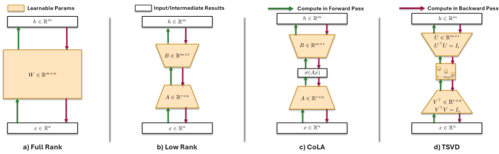

Why it matters왜 중요한가
Low-rank weight factorization is the most direct way to cut the parameter count — and hence memory, gradients and optimizer state — of LLM pretraining. The catch: naïve low-rank pretraining almost always loses accuracy versus a dense model.
저랭크 가중치 분해는 LLM 사전학습의 파라미터 수 — 나아가 메모리·그래디언트·옵티마이저 상태 — 를 줄이는 가장 직접적인 길이다. 문제는, 순진한 저랭크 사전학습이 거의 항상 밀집 모델보다 정확도를 잃는다는 점이다.
The known cure is orthonormality: keeping the basis factors orthonormal stabilizes gradients, curbs overfitting and improves conditioning. But enforcing it has been too expensive — regularizers only approximate it and add a hyperparameter, and Riemannian methods (LORO) retract onto the manifold via SVD only every ~500 steps, so weights sit off the manifold most of the time. TSVD's contribution is to make strict, every-step orthonormality practically free by piggy-backing on gradient accumulation, then to pick each layer's rank from an energy heuristic rather than a fixed guess. The result is the first low-rank pretraining recipe that maintains orthonormality at every update and still matches dense perplexity.
알려진 해법은 직교정규성이다 — 기저 인자를 직교정규로 유지하면 그래디언트가 안정되고 과적합이 줄며 최적화 조건수가 좋아진다. 하지만 이를 강제하는 비용이 너무 컸다. 정규화 항은 근사만 할 뿐 하이퍼파라미터를 추가하고, 리만 최적화(LORO)는 ~500스텝마다 SVD로만 매니폴드에 사영하므로 대부분의 시간 동안 가중치가 매니폴드 밖에 놓인다. TSVD의 기여는 gradient accumulation에 얹어 "매 스텝 엄격한 직교정규성"을 사실상 공짜로 만든 것, 그리고 각 계층의 랭크를 고정 추측이 아니라 에너지 휴리스틱으로 고른 것이다. 그 결과 매 업데이트마다 직교정규성을 유지하면서도 밀집 perplexity를 따라잡는 최초의 저랭크 사전학습 레시피가 나왔다.

By the numbers핵심 숫자
The head-to-head table정면 비교 표
| Method | 60M · PPL / Param | 130M · PPL / Param | 350M · PPL / Param | 1.3B · PPL / Param / Mem |
|---|---|---|---|---|
| Full-rank | 15.93 / 58 | 12.07 / 134 | 9.15 / 368 | 7.67 / 1,339 / 9.98 |
| Low-rank | 14.98 / 42 | 11.72 / 94 | 9.23 / 185 | 7.71 / 609 / 4.53 |
| CoLA | 14.83 / 45 | 11.57 / 101 | 9.22 / 222 | 7.74 / 760 / 5.66 |
| TSVD | 14.15 / 44 | 11.30 / 90 | 9.16 / 176 | 7.59 / 650 / 4.84 |
The core idea, two moves핵심 아이디어, 두 수
QR every forward pass, scale in Σ
The trainable params are unconstrained AU, AV and a vector ρ. Each forward pass sets U=qf(AU), V=qf(AV) (Q-factor of a reduced QR → exactly orthonormal) and Σ=diag(softplus(ρ)) (guaranteed positive). Then W=(1/√r)·UΣVᵀ. Because U, V have fixed unit norms, there is no hidden factor-rescaling ambiguity (AB⊤=(cA)(c⁻¹B)⊤) — all gain is isolated in Σ, killing the vanishing/exploding-gradient pathology of plain low-rank.
학습 파라미터는 제약 없는 AU, AV와 벡터 ρ이다. 순전파마다 U=qf(AU), V=qf(AV)(축소 QR의 Q인자 → 정확히 직교정규), Σ=diag(softplus(ρ))(양수 보장)로 만든 뒤 W=(1/√r)·UΣVᵀ. U, V의 노름이 1로 고정되므로 저랭크 특유의 인자 재스케일 모호성(AB⊤=(cA)(c⁻¹B)⊤)이 사라진다 — 모든 크기가 Σ에 격리되어 그래디언트 소실/폭주 병리를 제거한다.
Rank = spectral energy of a pretrained model
Instead of a fixed rank, run SVD on a small pretrained model's weights and pick, per matrix, the smallest rank that keeps ≥95% of the spectral energy. Empirically Q/K need the least, V/out ~50% more, MLP ~2×; these proportions stay nearly constant across model scales (and GQA is accountable), so ranks measured on a tiny model predict good ranks at larger scale — chosen once, before training.
고정 랭크 대신, 작은 사전학습 모델의 가중치에 SVD를 돌려 각 행렬마다 스펙트럼 에너지의 95% 이상을 유지하는 최소 랭크를 고른다. 경험적으로 Q/K가 가장 낮고, V/out은 약 50% 더, MLP는 약 2배가 필요하며, 이 비율은 모델 규모가 커져도 거의 일정하다(GQA도 설명 가능). 따라서 아주 작은 모델에서 잰 랭크가 큰 모델의 좋은 랭크를 예측하고, 학습 전에 한 번 정해진다.
How it works어떻게 작동하나
- Pick per-layer ranks. 계층별 랭크 결정. SVD a small pretrained model; per weight matrix take the min rank preserving ≥95% energy (Alg. 2). Q/K low, V/out ~1.5×, MLP ~2×.작은 사전학습 모델에 SVD를 돌려 가중치마다 에너지 95%↑ 유지 최소 랭크를 취한다(Alg. 2). Q/K 낮음, V/out ~1.5×, MLP ~2×.
- Swap in TSVD layers. TSVD 계층으로 교체. Replace attention & MLP linear layers with TSVD layers holding trainable AU, AV, ρ.어텐션·MLP의 선형 계층을 학습 가능한 AU, AV, ρ를 가진 TSVD 계층으로 바꾼다.
- Forward once, cache. 한 번 순전파, 캐시. On the first micro-batch of a step, compute U=qf(AU), V=qf(AV), Σ=diag(softplus(ρ)) and cache (Uᵀ, V, Σ).스텝의 첫 마이크로배치에서 U=qf(AU), V=qf(AV), Σ=diag(softplus(ρ))를 계산해 (Uᵀ, V, Σ)를 캐시한다.
- Reuse across micro-batches. 마이크로배치마다 재사용. Every subsequent micro-batch reads the cache and builds W=(1/√r)·UΣVᵀ — the QR cost is amortized across the whole accumulation window.이후 마이크로배치는 캐시를 읽어 W=(1/√r)·UΣVᵀ를 구성한다 — QR 비용이 누적 구간 전체에 분산된다.
- Update & clear. 업데이트 후 캐시 삭제. After the optimizer updates {AU, AV, ρ}, clear the caches so the next step re-orthonormalizes — strict orthonormality at every parameter update.옵티마이저가 {AU, AV, ρ}를 갱신하면 캐시를 비워 다음 스텝에서 다시 직교정규화한다 — 매 파라미터 업데이트마다 엄격한 직교정규성.
What to take away그래서, 가져갈 것
Low-rank pretraining can match or beat dense — but only if you keep the factors strictly orthonormal. Conditioning, not capacity, was the missing piece.
저랭크 사전학습도 밀집을 맞추거나 앞설 수 있다 — 단, 인자를 엄격히 직교정규로 유지할 때만. 빠진 조각은 표현력이 아니라 최적화 조건수였다.
The enabling trick is mundane and portable: amortize the expensive QR across gradient-accumulation micro-batches, so "orthonormal every step" is basically free at scale.
이를 가능케 한 트릭은 단순하고 이식성이 좋다 — 비싼 QR을 gradient-accumulation 마이크로배치에 분산해, "매 스텝 직교정규"를 대규모에서 사실상 공짜로 만든다.
Rank isn't one-size-fits-all: a 95%-energy heuristic on a tiny model gives per-layer ranks (Q/K < V/out < MLP) whose proportions transfer across scales and even GQA.
랭크는 획일적이지 않다 — 작은 모델의 95% 에너지 휴리스틱이 계층별 랭크(Q/K < V/out < MLP)를 주고, 그 비율은 규모와 심지어 GQA에도 전이된다.